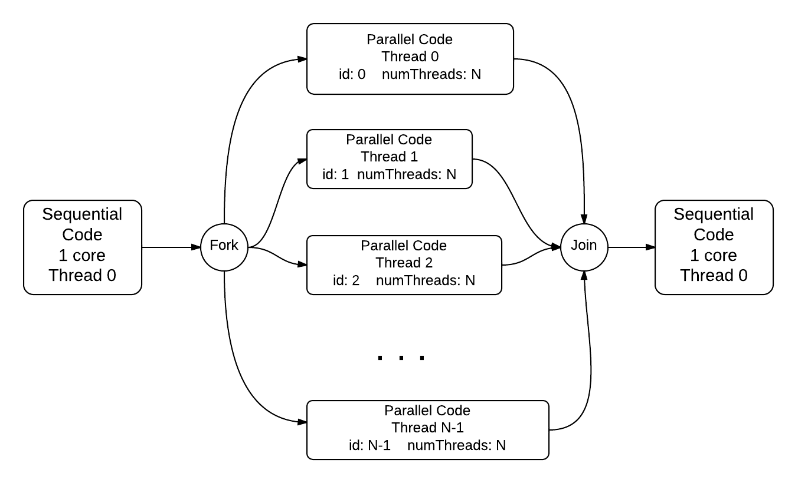

Parallel Code with Threads¶
We can make code that will run our coin flipping simulation faster, by making use of the cores available in multicore CPUs. We call this type of code parallel code, because we can designate portions of our program to run concurrently in parallel on different cores, computing part of the overall solution. In the case of flipping a coin, we can intuitively sense that it might be simple enough to designate that each core we have available could carry out some portion of the flips independently while other cores were taking care of the rest of the needed flips.
A common mechanism we use to run code on multiple cores simultaneously is by starting threads that can excute part of our code independently and in parallel on separate cores, sharing data values in memory if needed. When a program using threads begins execution, it is always running on a single main thread, which we conceptually label as thread 0. Then within the code we can designate that more threads should start executing in parallel along with thread 0. We call a point in the code where multiple threads are executing concurrently a fork of those threads. Then when they are done executing, we think of them as joining back with the main thread. Conceptually, this looks like this:
OpenMP: C/C++ aid for providing threads¶
The basic library for threading in C/C++ on linux/unix is called pthreads. There are several other thread libraries for other operating systems. A more convenient way to get started using threads is to use OpenMP, which is built into several popular C/C++ compilers as means to compile high-level directives into threaded code using an underlying threads library.
Let’s take a look at a very simple example of how this works:
1 2 3 4 5 6 7 8 9 10 11 12 13 14 15 16 17 18 19 20 | /*
* Illustration of OpenMP thread forking.
*/
#include <stdio.h>
#include <omp.h>
int main(int argc, char** argv) {
printf("\n");
#pragma omp parallel
{
int id = omp_get_thread_num();
int numThreads = omp_get_num_threads();
printf("Hello from thread %d of %d\n", id, numThreads);
}
printf("\n");
return 0;
}
|
Line 11 of this code illustrates how we can designate that the main thread 0 should fork and start multiple threads simultaneously. The code within the block following that line and between the curly braces will execute independently on each thread. Lines 13 and 14 illustrate functions that are available as part of the OpenMP library, which was included on line 6. There are several other functions available, most notably one that lets you set the number of threads to use, omp_set_num_threads, and one that lets you time your threaded code, omp_get_wtime, to see how much faster it performs.
Note
When you try an example like this, you should take special note that the order in which each thread will complete is not guaranteed.
compiling: To compile a code file like this in linux/unix, you will need to add this option to gcc or g++ in your makefile or on the command line: -fopenmp. In and IDE like Visual Studio, you will need to set a preference on your project for the C/C++ language to enable OpenMP.
For loop parallelization¶
In a great deal of code examples, much of the work being performed can be found within for loops that are performing a large number of iterations, such as the coin-flipping example in the previous section. A well-used pattern in parallel programming is to split the work being done in these loops across multiple forked threads. OpenMP has a pragma for deisgnating this in the code. Here is a simple example:
1 2 3 4 5 6 7 8 9 10 11 12 13 14 15 16 17 18 19 20 21 22 23 | /*
* Parallel for loop using equal chunks per thread.
*/
#include <stdio.h> // printf()
#include <stdlib.h> // atoi()
#include <omp.h> // OpenMP
int main(int argc, char** argv) {
const int REPS = 16;
omp_set_num_threads(4);
#pragma omp parallel for
for (int i = 0; i < REPS; i++) {
int id = omp_get_thread_num();
printf("Thread %d performed iteration %d\n",
id, i);
}
printf("Main thread 0 done.\n");
return 0;
}
|
In this example, we set up a very small number of repetitions of the loop, simply to illustrate how forking threads and running the loop iterations works. The OpenMP pragma on line 14 is asking the compiler to set up an equal distribution of work for each thread, which will take place like this for the 4 threads indicated on line 12 and the 16 repetitions of the for loop:

When running a simple example like this, you will find that each repetition will not be carried out in order from 0 through 15, as each thread will do its designated repetitions at the same time as the other threads, shceduled by the operating system on the cores available.
Next step: using OpenMP¶
In the next section we will see how we can use threads and OpenMP to make coin flipping faster.